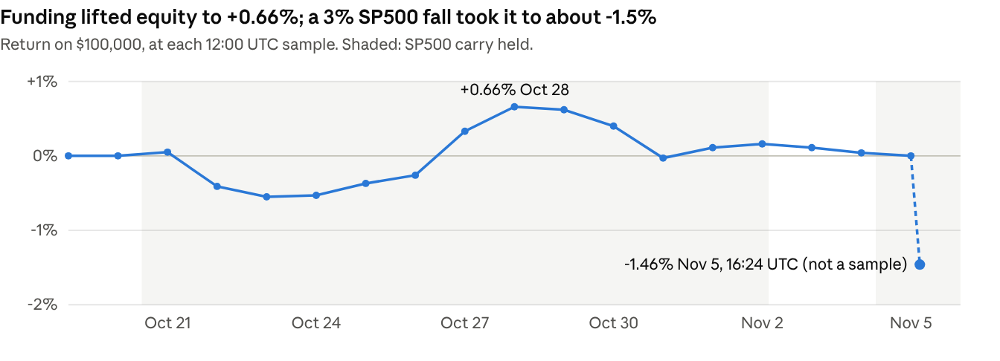

Abstract. We built a live trading system for a HIP-3 perpetuals venue and tested each idea under rules fixed before seeing its test data. Our first strategy, trading order-book dislocations against the oracle, passed locked tests on the practice venue, but those gaps barely existed on the scored venue. Mid-phase we moved to a funding carry under a rule locked before deployment. ML Model 1, a gradient-boosted forecast of the oracle 15 seconds ahead, beat its baseline in every test (live R² 0.358 vs 0.306), yet added little to P&L. Carry earned $1,202 in funding, but a fall of over 3% in SP500 on Nov 5 left the account at about -1.5%. We report the failures in full, including our pre-registered tests that did not pass. This report was submitted before the phase ended on Nov 6 12:00 UTC, so live figures are a snapshot at Nov 5 16:24 UTC.
Teams trade ten perpetuals (BTC, ETH, HYPE, SP500, EWY, EWJ, BRENT, GOLD, USDEUR, USDJPY) with $100,000 for 18 days, paying 9 bp taker and 3 bp maker fees. The financial score is
Q = (max(R, 0) + 0.005) / (|R| + 1.5σ + 0.05)
where R is the return between daily samples at 12:00 UTC, equity is valued at the mark price, and σ is the daily-return standard deviation times √n. R = 0 gives Q = 0.10 and any loss gives less. So a steady small profit beats a volatile larger one. The overall score is 0.8 Q + 0.2 J, where J is the jury score.
REPORT_NOTES.md in the repository).record_ws.py): oracle, mark and funding at about 1 s, full order books, and every trade with its addresses.The bot runs 24/7 on a cloud VM with watchdog restarts, phone alerts, a kill switch and a 2% daily loss stop. One setting (HL_DEX) moved it from practice to the scored venue, with separate state files so positions could not carry over.
Each strategy had a design period and a later test period. The rule and the pass criterion were committed to git before the test data existed, so commit times are the proof. Drift tests used net P&L excluding oracle moves, to separate edge from luck. E42 pre-registered the live evaluation before the first scored trade. Table 1 lists the outcomes.
| Idea | Test | Result | Decision |
|---|---|---|---|
| Trend following | Hourly history, full costs | Every lookback loses in-sample (best -4.0%) | Dropped |
| Risk parity | Simulated with drift | +0.07% per 19 days at 0.25x, daily std tripled | Off |
| Drift v1 (top-of-book gap) | Locked test, 32 h, 16 trades | -$443 excl. oracle moves: failed | Replaced |
| Drift v2, v2b (gap at the executable $25k price) | Locked test, 73 h, 18 and 44 trades | +$1,299 and +$1,835 excl. oracle moves: passed | Live on practice venue |
| Mainnet lead as taker signal | Recorded books, grid | Forecast accurate, but only moves over ~35 bp pay (8 in 2 days) | Dropped |
| ML market maker | Paper A/B, 29 h | +0.7 to +2.0 bp net, s.e. ~1.6; ML no better than simple | Not run live |
| Weekend oracle gaps | One weekend | All reopening jumps ≤ 4 bp | Dropped |
Table 1. What we tested before the scored phase.
Backtests were also reconciled with live fills (E30). Live drift made +$464 against +$1,117 simulated, and every trade the bot missed was a gap lasting ≤ 5 s. Later backtests therefore use the live 15 s check interval.
Hyperliquid mainnet leads the venue's oracle by 5 to 9 s (E20). We forecast the oracle's next 15 s move with a gradient-boosted tree model (scikit-learn HistGradientBoosting: 300 iterations, learning rate 0.05, 31 leaves). It uses 20 features: the mainnet-vs-oracle premium and its lags, mainnet and oracle returns, volatility, seconds since the oracle last changed, book position, time of day and market. The baseline is OLS on the offset-removed premium.
| Evaluation (15 s horizon) | Baseline R² | GBM R² |
|---|---|---|
| Walk-forward, 4 blocks, 5-min purge (1.74M rows) | 0.23 | 0.36 |
| Locked out-of-sample test, 73 h | 0.160 | 0.324 |
| Live shadow mode on practice venue, 29 h (1.03M predictions) | 0.306 | 0.358 |
| Live shadow mode on scored venue | after phase | after phase |
Table 2. Forecast accuracy. All rows are out of sample. The scored-venue log is scored after the phase, to keep load off the live bot's VM.
The gain is largest where the simple rule breaks. On weekends in non-crypto markets, baseline R² is -1.03 and GBM 0.36, because staleness features capture slowly updating oracles. Training and live inference share one feature module (bot/features.py), and the model ran in shadow mode, logging predictions without trading, before it touched any order.
Use in trading. Predicted moves are small next to round-trip costs of ~35 bp, so the model cannot trade alone. It filters drift entries: the edge is adjusted by the predicted move, because a gap that the oracle is about to close offers no profit. The locked test passed narrowly (+$1,700 on 38 trades vs +$1,601 on 37), and the oracle-move part of P&L improved from -$204 to +$128. That is weak evidence.
Limits. Ridge regression nearly matches the GBM at 15 s (0.35), so most of the value comes from the features, not the non-linearity. The GBM's margin over the baseline shrank live. A better forecast also did not make the paper maker pay.
Drift's edge did not transfer. On pas, a $25k fill at least 30 bp better than the oracle appeared on 0.0% of checks in every market in the first 35 hours (E45); SP500 later reached 0.2%, from its standing discount (E47). The first live trade showed why: another team swept BRENT, the oracle followed within seconds, and the gap was price discovery rather than mispricing (E44).
Funding was the larger opportunity. Longs in SP500 were paid about 100%/yr, so we studied carry before trading it (E46). Funding history was too short to backtest, so we separated the two risks. Price risk came from 156 historical 16-day windows with the drift removed, and funding was assumed at multiples of the observed level.
| SP500 long $50k | Funding x1 | x0.5 | x0 | Flips (x-0.5) |
|---|---|---|---|---|
| Median R | +1.91% | +0.78% | -0.34% | -1.45% |
| P(loss) | 1% | 15% | 60% | 88% |
| Mean Q (flat = 0.10) | 0.28 | 0.18 | 0.11 | 0.07 |
Table 3. Carry study. Everything depends on funding persisting.
Locked rule: hold $50k of SP500 on the side receiving funding when the last 24 hourly rates average at least 30%/yr, and exit below 15%/yr. We kept SP500 alone because a hedge and a basket added little. Drift then bought SP500's standing discount on top of the carry and lost $242. We fixed this by measuring gaps against each market's 6-hour median premium (E47), adopted under a decision rule fixed before its test. A size check on Oct 28 kept $50k: doubling added at most 0.035 to Q and worsened the bad tail (E48).

Fig. 1. Rebuilt from public fills, funding and hourly prices (backtest/eval_live.py). Daily std 0.250% vs the official 0.247%.
| Sleeve | Funding | Price | Fees | Net |
|---|---|---|---|---|
| Carry 1, Oct 20 to Nov 2 | +$1,149 | -$725 | -$89 | +$335 |
| Carry 2, Nov 4 to snapshot (open) | +$54 | -$1,504 | -$45 | -$1,495 |
| Drift, 10 round trips | +$191 | -$152 | -$338 | -$299 |
| Total | +$1,393 | -$2,380 | -$472 | -$1,459 |
Table 4. P&L attribution from fills, reconciled to the account (equity $98,541 at the snapshot).
The first carry episode worked as designed and exited by its rule when funding faded. The rule re-entered on Nov 4 as the 24-hour funding average recovered past 30%/yr. On Nov 5, SP500 fell over 3% in three hours, also on mainnet, erasing what funding had paid across the whole phase. We did not override the rule; at the snapshot, flattening would have locked in a loss and given up the jump in Q above R = 0. Official standing at the Nov 5 sample, before the fall: rank 22 of 39, R +0.005%, Q 0.077. If equity held at the snapshot level, the final Q would be about 0.054.
| Pre-registered question (E42, E46) | Result at the snapshot | Verdict |
|---|---|---|
| H1: drift's mean net per trip > 0 | -$29.90, 95% bootstrap CI [-$96, +$33], 3 wins of 10 | Not supported |
| H2: live vs backtest (descriptive) | Replay runs after the phase; not in this report | Pending |
| H3: daily std ≤ 0.5%, max drawdown ≤ 3% | Std 0.247% (official); drawdown -2.1% from the Oct 28 peak | Passing so far |
| H4a: GBM R² > baseline on scored venue | Scored after the phase; not in this report | Pending |
| H4b: ML filter, taken vs skipped entries | 10 entries taken; skips not tallied; 20 required | Pending |
| H5: heartbeat ≥ 99% of minutes | Computed from bot.log after the phase | Pending |
| Carry: funding > price + costs | Episode 1 yes; overall no (+$1,202 vs -$2,363) | Failing |
Table 5. The pre-registered evaluation, as far as it could run before submission.
Samples are short: 73 hours for the locked drift tests, one 29-hour shadow window, and 10 live drift trades. Seconds overlap in the R² data, so the effective sample is far smaller than the row count. The carry study could not test funding persistence, and it assumed the price risk of a period with 0.63% daily volatility; the Nov 5 fall exceeded five times that. The 2% account loss stop gives little protection to a $50k position, which needs a 4% move to reach it.
Three lessons. An edge measured on one venue is only a hypothesis on the next; recording the scored venue from Oct 16 let us see that within two days of the start. Carry is pay for bearing risk, not free income, and our single-market position carried all of that risk; a size tied to recent volatility, or a hedge, deserves testing. Finally, forecast accuracy is not profit: our most accurate model mattered less than a simple rule built on the venue's mechanics.
Reproducibility. Code: github.com/SparshGautam08/perpetual_alpha_comp. Every experiment in REPORT_NOTES.md lists its command; the README maps them. The live evaluation is python -m backtest.eval_live (public data only, bootstrap seed 42); shadow scoring is python -m backtest.eval_shadow. Recordings are kept outside the repository because of their size. Entries were fully algorithmic. Code and analysis were developed with an AI coding assistant (Claude Code); the team made the decisions and fixed the rules.